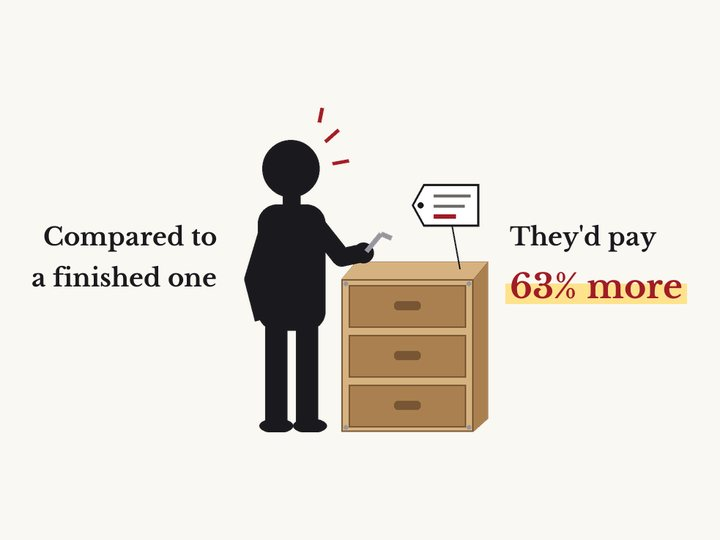
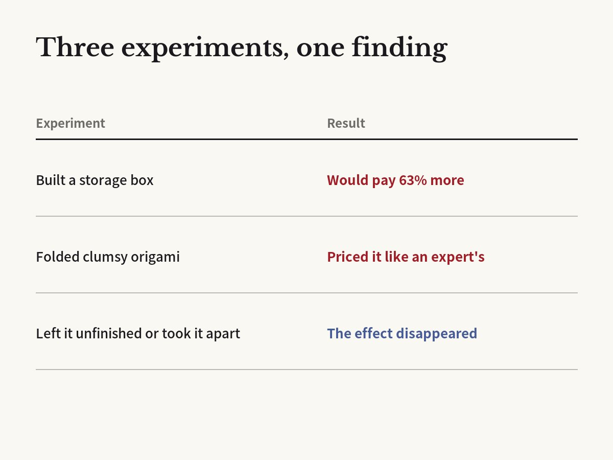

People will pay 63% more for a box they built than for the same box built by someone else
Michael I. Norton, Daniel Mochon, Dan Ariely · Journal of Consumer Psychology, 2012

01The result
Researchers from Harvard Business School and Duke University asked people to build a simple IKEA storage box. It was easy work: anyone could do it by following the instructions.
Another group did not build anything. They just looked at the same box, already put together.
Then both groups said how much they would pay for the box. The builders were willing to pay 63% more on average than people who saw the ready-made box. They also liked it more.
The researchers named this the IKEA effect, after the furniture company.

02Clumsy, but mine
In another test, beginners folded paper frogs and cranes. Naturally, their work looked rough.
But the folders valued their own creations highly, almost as much as pieces made by origami experts.
People who had not folded them saw things differently. They did not want to pay much for the clumsy pieces. The value of what we make looks big mostly to ourselves.
03Only if you finish
The researchers also tested when the effect disappears. When people stopped just before the last two steps of building the box, they offered much less than those who finished.
It also vanished when people built something with Lego and then had to take it apart right away.
Effort alone is not enough, the researchers say. Labor leads to love when it ends in success. A later study by the same team linked the effect to our wish to feel capable.
04Do children do it too?
In 2018, researchers in the UK and Germany published a study in the journal Cognition on when this effect begins. Children aged 3 to 6 made something themselves, and the researchers checked whether they valued their own creation more than one made by someone else.
The effect first appeared around age 5. The researchers noted that this is when children start to form a clear sense of self.
There was a twist. For 5- and 6-year-olds, how hard they worked did not change the size of the effect. A feeling of ownership did not explain it either. Effort and ownership alone fall short; the sense that what we make reflects who we are may matter.
05Cake mix and an egg
A story often told with this research is about instant cake mix. When mixes that only needed water first came out, they did not sell as well as hoped, and adding an egg yourself supposedly made them more popular.
It is a famous story, but it is not clear that it really drove sales. It gets mentioned because it matches the study's point: when we put in a little work, the result feels more like ours.
06What it means
This may be why it is hard to throw away a slightly crooked shelf, a lumpy scarf you knitted, or the first meal you cooked. It may look ordinary to others, but it is special to you.
There is a flip side. If your own plan or proposal looks especially good to you, the IKEA effect might make you rate it higher than it deserves. A second look through someone else's eyes helps.
Companies use the effect, too. When customers choose, design or assemble a product themselves, they tend to value it more.
07Limitations
The tests used cheap items and small amounts of money. It is unclear if the effect is as strong for big decisions like expensive furniture or a home.
The study measured how much people said they would pay, not how happy they were with the item later.
Corrections
- We corrected the description of the 2018 children's study team from "researchers in the UK" to "researchers in the UK and Germany." One of the three authors is at the Free University of Berlin. We also corrected the unfinished-box test: people stopped just before the last two steps, not halfway, and what dropped was the amount they offered to pay.
Original paper
- Norton, Mochon & Ariely (2012), Journal of Consumer Psychology 22(3), 453–460